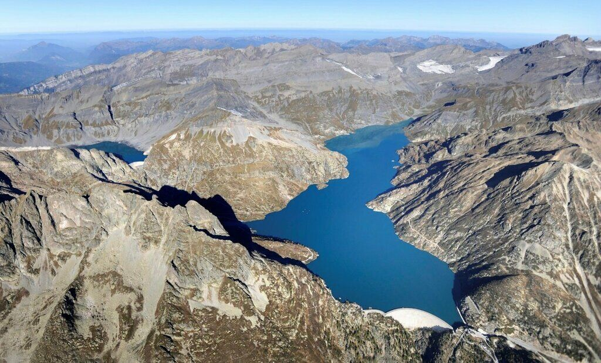
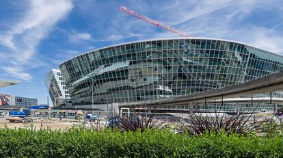
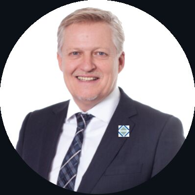

The Art of Engineering.
MBecker Engineering
Project, contract and claim management for large infrastructure projects. Independent, from Zurich.
In figures
Swissness meets ‘Made in Germany’
Swiss excellence, combined with German engineering knowhow, is a game changer.
A civil engineer from Cologne, in Switzerland since 2008: at Pöyry, on the Gotthard, at Marti and Steiner, and as an independent engineer since 2020.

References
Six of eighteen projects. In each, his role was contracts, claims and the project as a whole.

Gotthard Base Tunnel
Head of Contract Management, client side
View project
Hydro Electric Pump Storage Plant Linth-Limmern
Claim and Contract Manager General Contractor side
View project
Hydro Electric Pump Storage Plant Nant de Drance
Claim and Contract Manager General Contractor side
View project
Metro Line 2
Senior Project and Contract Manager, engineering consortium
View project
STEP Water Sewer Tunnel
Senior Project and Contract Manager, contractor
View project
The Circle at Zurich Airport
Head of Project Management
View projectThe drive, year by year
2011
Station
Projects this year
No reference project listed for this year; the station on the left shows where he worked.
- Qubes Technology CentreMunich · 2022 · Head of Project Management HVACR
- New construction of waste incineration plantHinwil · 2022-2028 · Project Manager Civil Engineering at client side
- Reconstruction of Kaiserlei traffic circleOffenbach · 2021-2022 · Project Management utility construction
- The Circle at Zurich AirportZurich Airport · 2020-2021 · Head of Project Management
- Highway SectionSouth-eastern Switzerland · 2020-2033 · Senior Civil Engineer
- International AirportEastern Europe region · 2019 · Director Engineering, head of the engineering department
- Bid Offer Motorway Feeder RoadCanton of Aargau · 2018 · Freelancing Civil Engineer at the calculation department of a leading Swiss construction company
- PostParcBerne · 2017 · Senior Contract Manager General Contractor
- Residential Buildings Schönberg OstBerne · 2015-2016 · Senior Contract Manager General Contractor side
- Hydro Electric Pump Storage Plant Nant de DranceFinhaut · 2013-2014 · Claim and Contract Manager General Contractor side
- Hydro Electric Pump Storage Plant Linth-LimmernTierfehd · 2013-2014 · Claim and Contract Manager General Contractor side
- Mangdechhu HEP TunnelTrongsa · 2013-2014 · Senior Contract Manager
- Gotthard Base TunnelLots Sedrun, Faido, Bodio · 2011-2013 · Head of Contract Management, client side
- STEP Water Sewer TunnelAbu Dhabi · 2010-2011 · Senior Project and Contract Manager, contractor
- Metro Line 2Mashhad · 2009-2011 · Senior Project and Contract Manager, General Contractor side
- Metro Line 2Ho Chi Minh City · 2009-2011 · Senior Project and Contract Manager, engineering consortium
- Tohid Street TunnelTehran · 2008-2010 · Senior Project and Contract Manager, General Contractor side
- Bioethanol PlantLacq · 2006-2007 · Senior Contract Manager General Contractor
Our Competency
Project management over the whole life cycle, and the knowledge passed on in workshops.


Your Contact Person

Michael Becker
M. Sc. C. Eng. / Certified Senior Project Manager IAPM
Member of the Expert Chamber of Swiss Engineering
Our Vision
To be proud in our daily work, through recognition of our commitment to customer service and client satisfaction.
Our Values
MBecker Engineering treats every individual with equal respect and dignity, regardless of position, ethnicity, religion, or gender.
Our Beliefs
Working for you to make a difference. Overcoming challenges, by striving to excel. MBecker Engineering finds the best solution to meeting your goals.